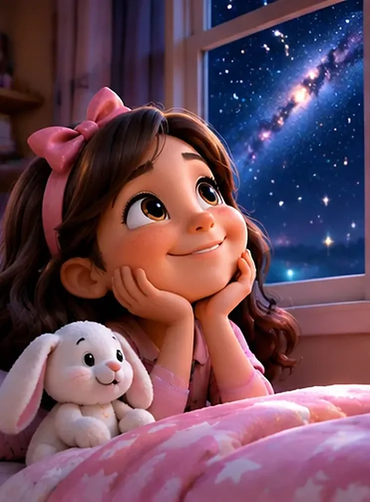
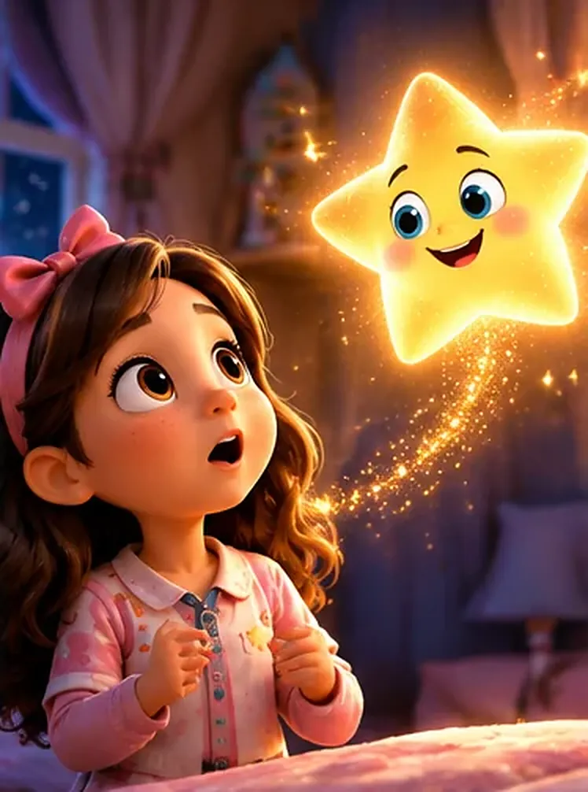
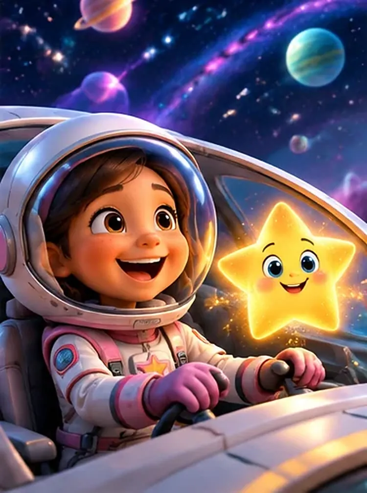
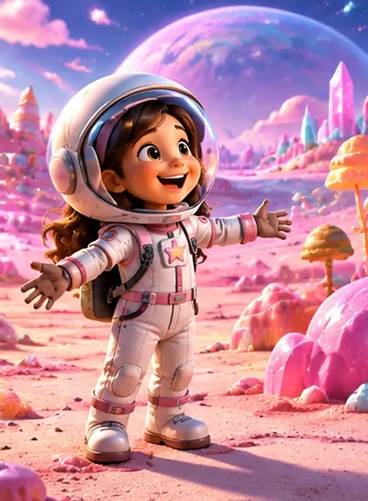
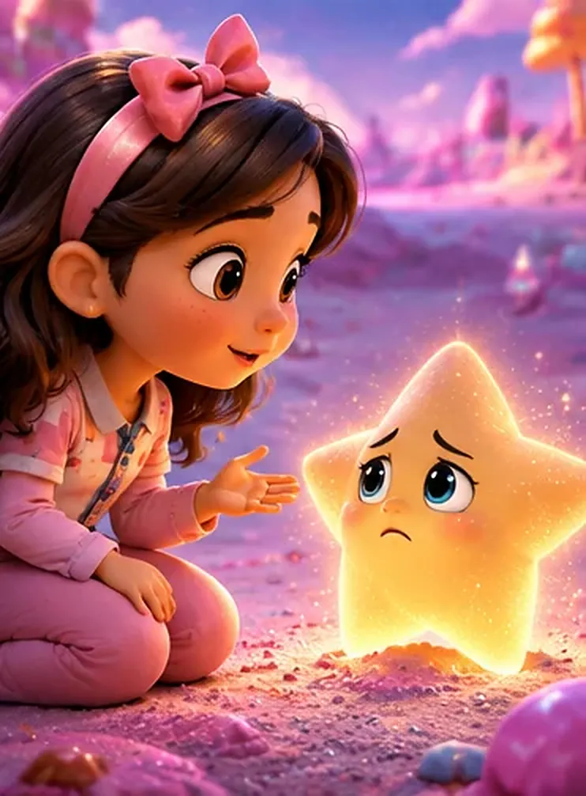
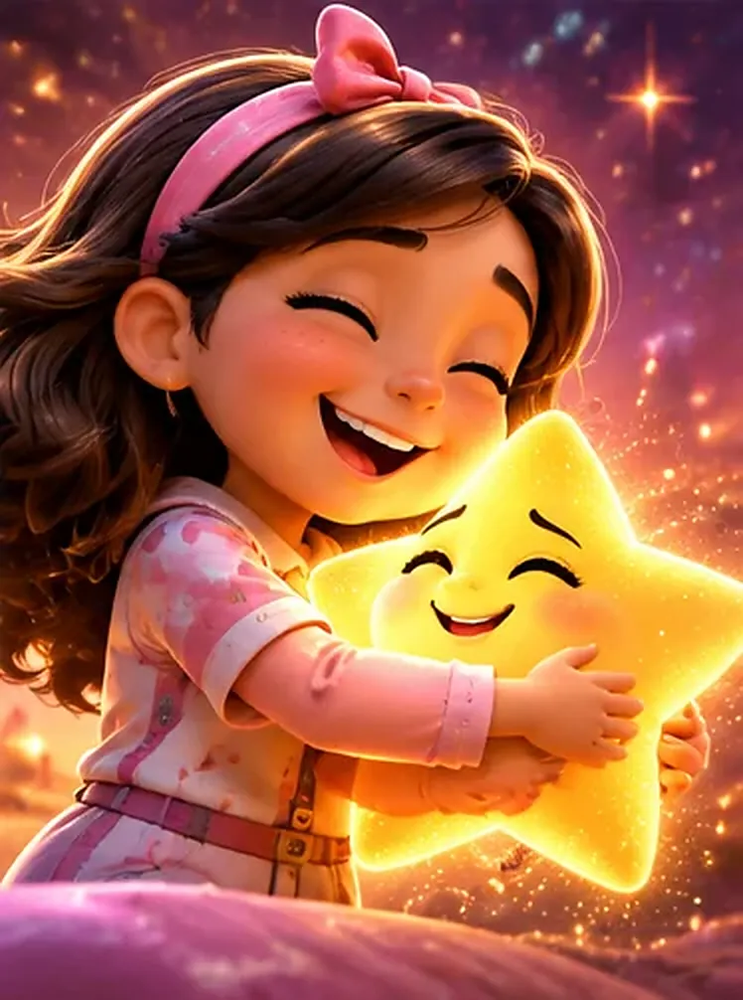
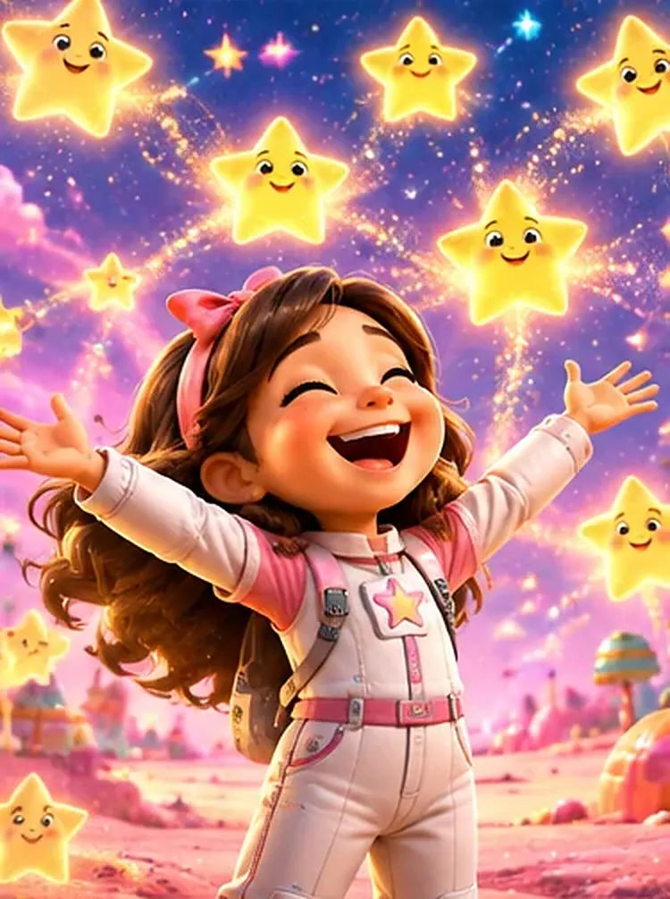
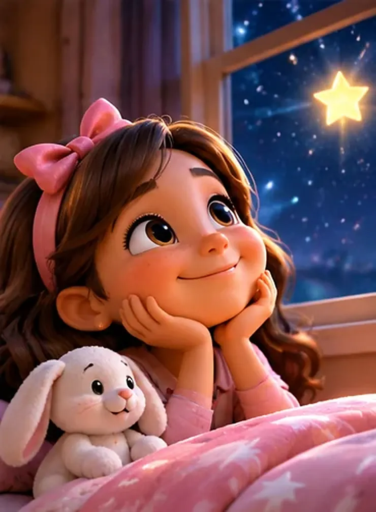

Era de noche y Marie no tenía sueño. Abrazada a su conejito de peluche, miraba por la ventana el cielo lleno de estrellas.
—¡Cuántas estrellas! ¿Cómo será vivir allá arriba? —se preguntó Marie.

De pronto, una estrellita amarilla entró volando por la ventana, dejando un caminito de brillos. ¡Tenía ojos y una gran sonrisa!
—¡Hola, Marie! Soy Lucecita. ¿Quieres venir de paseo por el espacio? —dijo la estrella.
—¡Sííí! —respondió Marie con la boca abierta.

En un abrir y cerrar de ojos, Marie tenía puesto un traje de astronauta y manejaba una nave espacial. Lucecita iba a su lado, mostrándole los planetas.
—¡Allá vamos! —gritó Marie, feliz.

La nave aterrizó en un planeta rosado, con montañas de caramelo y cristales brillantes. Marie abrió los brazos para mirarlo todo.
—¡Es el lugar más bonito que he visto! —dijo Marie.

Pero cuando Marie volteó, Lucecita estaba en el suelo, muy triste. Su luz se estaba apagando poquito a poquito.
—¿Qué te pasa, Lucecita? —preguntó Marie.
—Me alejé mucho de mi familia y ya no sé volver… Sin ellas, mi luz se apaga —dijo la estrellita.

Marie la tomó con cuidado y le dio un abrazo muy fuerte. ¡Y entonces pasó algo mágico! Con el cariño de Marie, Lucecita empezó a brillar otra vez.
—No estás sola. Yo te ayudo a encontrarlas —le dijo Marie.

La luz de Lucecita brilló tan fuerte que sus hermanas estrellas la vieron desde lejos. ¡Llegaron volando, felices de encontrarla!
—¡Gracias, Marie! ¡Ahora todas brillamos juntas! —cantaron las estrellas.

Marie despertó en su cama, con su conejito al lado. ¿Habrá sido un sueño? Miró por la ventana y vio una estrella que brillaba más fuerte que todas… y le guiñaba un ojo.
—Buenas noches, Lucecita —susurró Marie, sonriendo.
Un poco de cariño puede devolverle la luz a quien está triste. Cuando ayudamos a alguien que se siente perdido, nuestra propia luz también brilla más.